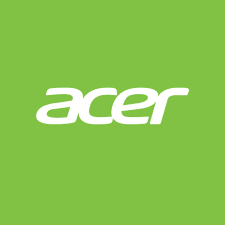
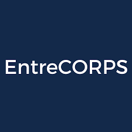
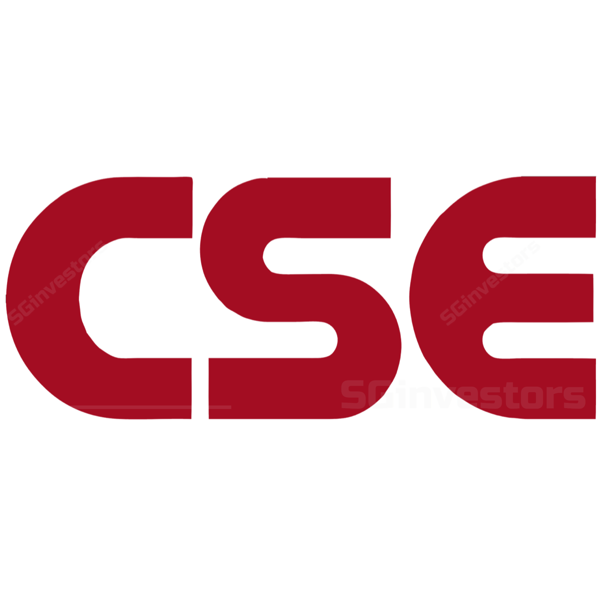

Hey there! 👋
My name is Albert and I am a 4th year Finance and Information Systems Major at the University of Illinois at Urbana-Champaign. My passion centers around product management, and combined with my experiences in consulting, program management, and product management, I am looking to impact change in the tech world.
This summer, I have the opportunity to serve as a Product/Program Manager Intern for Amazon and contribute to their Reliability Mantainence Engineering on Early Life Cycle Programs. Taking ownership of 4 projects, I'm channeling Amazon's key Leadership Principles on Think Big, Customer Obsession, and Delivering Results within my processes. I enjoy breaking the barriers between people and technology - combining my technical knowledge with my creative mind and keen eye for design to create beautiful products. My goal is to always deliver products that are scalable and efficient under the hood while providing engaging, pixel-perfect user experiences.
When I'm not in front of a computer screen, I'm probably playing volleyball, cruising around on my electric longboard, or crossing off another item on my bucket list.
Programming Skills
Python (Pandas, NumPy, Sci-Kit)
R (KNN, Random Forest, Neural Network)
Other Skills
UI/UX Design (Canva, Figma, InVision)
Microsoft Suite (Excel, PowerPoint, Power BI)
Adobe Premiere Pro/After Effects

University of Illinois Urbana-Champaign
August 2021 - May 2025
Senior in Finance and Information Systems
Relevant Coursework
• Business Intelligence, Database Design, Data Science and Analytics
• Financial Markets, Options and Futures Markets, Entrepreneurial Finance
• New Product Development, Business Process Improvement, Business Analytics
Extracurriculars
• Gies College of Business Ambassador
• Illini World Taekwondo Demo Team
• FVE Volleyball Club Team

Amazon
May 2024 - Present
Product/Program Manager Intern
Driving standardization across processes and specifications in diverse emerging markets. Conducting gap analyses, identifying standardization opportunities, and implementing consistent procedures. Utilizing Excel and Tableau to prepare data visualizations and documentation and collaborate with stakeholders to ensure project milestones are achieved. Within the projects, I'm moving quickly with a focused determination to get things done, breaking down complex problems to make data-driven decisions that best serve customers, and helping grow our team processes in current and emerging markets.
Technical Skills:
• Microsoft Excel, Tableau, Figma
• Process Improvement, Continous Improvement
• Gap Analysis, Global Standardizing Processes
• RACI Chart, Agile, Sprints

Acer
July 2023 - August 2023
Product Manager Intern
Operated in a software development life cycle and Agile environment to contribute to Acer’s naked-eye 3D SpatialLabs’ TrueGame gaming and 3D Model Viewer. Leveraged product management, Unity and Unreal game engine development, and AI research to support development efforts, strategic planning, user requirements planning, create use cases, and lead product strategy to bolster the Spatial Computing team. Conducted product performance optimization through data analysis and competitor analysis.
Technical Skills:
• Usability Testing, User Research, Product Roadmap
• Unreal, Unity, C++, Blueprint Scripting
• 3D Modeling, CAD (AutoVRED), DCC (Blender)
• UI Design, Use Case Development, Technical Specs and Requirements

CUBE Consulting
February 2023 - Present
Executive Director
Experience Timeline: Consultant –> Technical Project Manager –> Now
Establish professional development opportunities for a non-profit consulting firm of 70+ consultants and 9 start-up based clients by increasing partnerships with Chicagoland businesses to achieve a diversified client portfolio and cultivate consultant development. I handle formulating a centralized alumni networking system of 300+, expand national exposure via corporate sponsorships, and deliver tailored solutions ensuring sustainable growth to the firm by creating talent development pipelines.
Past Role as TPM: I helped launch the MVP of a startup focused on AI-enabled real estate decarbonization with features on automated compliance assessments, AI-enabled project recommendation, and energy efficiency vendor marketplace. I led a development team in an agile development, running sprints, and helped design and code their full-stack application. Our team was able to secure $25,000 in non-dilutive funding, gather a network of 200+ potential customers, validated the product with over 10 multi-billion dollar CRE firms, and receive a Free Pilot Agreement with Foresight Investment Group ($12 Billion AUM).
Technical Skills:
• Reframing what winning means, Organizational Design, Relationship-Building
• Strategy Development, Continuous Improvement, Lead Generation
• Flask, React, MongoDB, Software Development Life Cycle
• Microsoft Suite (Excel, PowerPoint, Power BI)

EntreCORPS | Consulting For Startups
February 2023 - Present
Director of Training and Development
Experience Timeline: Technical Consultant –> Technical Project Manager –> Senior Manager –> Now
Develop and present group and individual learning experiences through identifying training needs based on skill gap analyses for new consultants, senior consultants, and project managers. These include topics on PowerPoint slide design, Primary and Secondary research, Project Management Methodologies and Lifecycles, Data Visualization, Issue Trees and GANTT Charts, Storytellilng and Presentations, and Leadership Style. I would gather data for continuous improvement through post-implementation surveys and training feedback forms.
Past Role as TPM: I helped launch Illinois Computes Research Notebooks for the National Center for Supercomputing Applications at UIUC, democratizing research computing and making computing resources and support more accessible on campus. I led a team of 7 technical consultants and supported in expanding the user group through usability testing, primary research, and competitor analysis to push the tool past the second round of testing and launch it within UIUC. It is now a popular tool among data scientists for analysis, modeling, and machine learning. Professors and students can also use the tool for teaching and conducting research.
Technical Skills:
• Professional Development, Instructional Design, Curriculum Development
• Radiant, Kubernetes, JupyterLab, Taiga storage, Grafana, Telegraf
• Python, Data Visualization, Testing & Debugging
• Microsoft Suite (Excel, PowerPoint, Power BI)
Product Management @ Illinois
February 2023 - April 2023
Associate Product Manager
Putting human-centered design skills to the test and collaborating with interdisciplinary teams to create innovative solutions that addressed real-world problems through user research, ideation, and prototyping. I was responsible for analyzing Microsoft Family’s current features and performance to develop a disability-accessible financial literacy tool for families practicing PM and SCRUM methods. In this case, I identified pain points/conducted user research to create an empathy map, wireframe, competitive analysis chart, iterative prototype, product roadmap, and Minimum Viable Product adopting Figma.
Techncial Skills:
• Human Centered Design, User Research
• Product Development, Product Roadmap, Scrum
• Wire-Framing, Prototyping, Empathy Map, Figma

Hankin Environmental Systems
May 2022 - August 2022
Project Management Intern
Worked closely with cross-functional teams to define project metrics, develop budgets, facilitate project meetings, and meet quality standards for Hankin Environmental Systems. Utilized Jira, Waterfall Methodology, Dax, PowerBI, and Excel to contribute to the successful execution of projects. Explored the design, supply, and installation of high-temperature thermal process systems using multiple hearths, fluidized beds, rotary kiln furnaces, and custom-designed waste incinerators
Technical Skills:
• Jira, Waterfall Methodology
• Excel, Power BI, DAX
• Technical Documentation